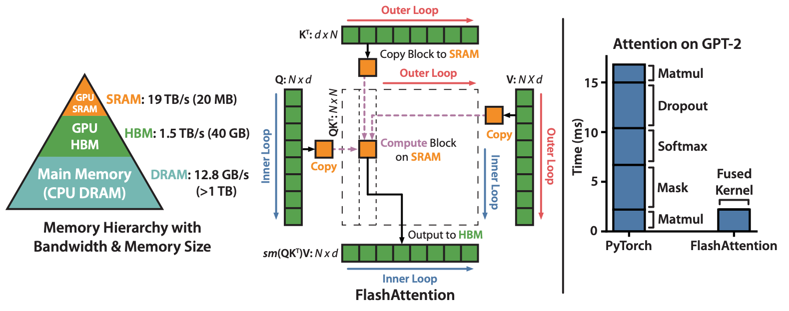
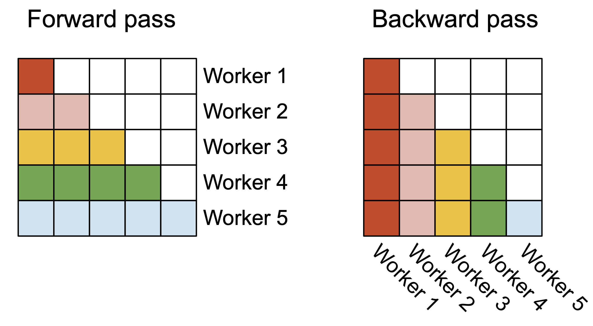
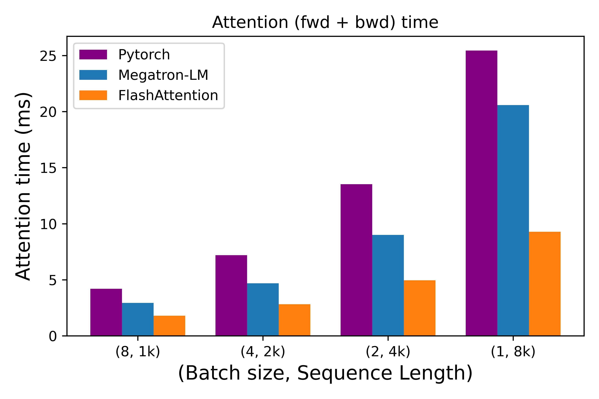
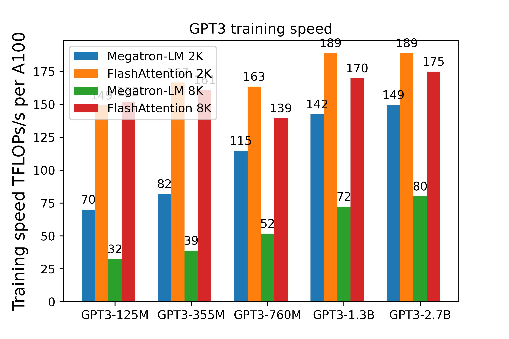
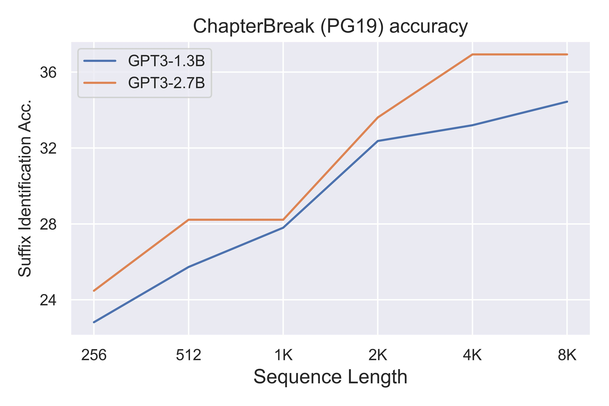

Transformers have grown deeper and wider, but training them on long sequences remains difficult. The attention layer at their heart is the compute and memory bottleneck: doubling the sequence length would quadruple the runtime and memory requirements. FlashAttention is a new algorithm to speed up attention and reduce its memory footprint—without any approximation. Since we released FlashAttention 6 months ago, we’ve been very happy to see FlashAttention being adopted by many organizations and research labs to speed up their training & inference (see this page for a partial list).
For the last 2 months I’ve been collaborating with AdeptAI as a part-time research fellow and we’ve been developing some improvements to FlashAttention to make it even better! In this post, we describe one key improvement that we’re particularly excited about: making FlashAttention fast for long sequences to enable training large language models with longer context. As an example, for sequence length 8K, FlashAttention is now up to 2.7x faster than a standard Pytorch implementation, and up to 2.2x faster than the optimized implementation from Megatron-LM, even at small batch size. As we will see, training with longer context yields higher quality models. As we’ve mentioned before, we believe that modeling longer sequences could help us take the next leap in AI, and FlashAttention is one component to scale Transformers to longer context.
Scaling up the context length of Transformers is a challenge, since the multihead attention layer at their heart has runtime and memory requirements quadratic in the input sequence length. Ideally, we would like to go beyond the standard 2K sequence length limit to train models to understand books, high resolution images1, and long-form videos. At Adept, we’ve been training large Transformers (ACT-1) to take actions with the goal of building an AI teammate. Understanding webpages, software tool interfaces, and multi-turn user interactions can require contexts that far exceed the common 2K standard.
FlashAttention is an algorithm that reorders the attention computation and leverages classical techniques (tiling, recomputation) to significantly speed it up and reduce memory usage from quadratic to linear in sequence length. This works great for most cases, but it was not optimized for the case of super long sequences (where batch sizes and numbers of heads are small) due to insufficient parallelism. If one trains large Transformers on long sequences with modern parallelism techniques (data parallel, pipeline parallel, tensor parallel) to split the data and model among many GPUs, the batch size can get very small (e.g. batch size of 1 with pipeline parallelism, and number of heads around 8-12 with tensor parallelism). This is the case we would like to optimize for.
For each attention head, to reduce memory reads/writes, FlashAttention uses classical tiling techniques to load blocks of query, key, and value from GPU HBM (its main memory) to SRAM (its fast cache), compute attention with respect to that block, and write back the output to HBM. This reduction in memory reads/writes brings significant speedup (2-4x) in most cases.

FlashAttention speeds up attention by reducing the GPU memory reads and writes.
The first version of FlashAttention parallelizes over batch size and number of heads. For those familiar with CUDA programming, we use 1 thread block to process one attention head, and there are overall batch_size * num_heads threadblocks. Each thread block is scheduled to run on a streaming multiprocessor (SM), and there are 108 of these SMs on an A100 GPU for example. This scheduling is efficient when batch_size * num_heads is large (say >= 80), since we can effectively use almost all of the compute resources on the GPU.
In the case of long sequences (which usually means small batch sizes or small number of heads), to make better use of the multiprocessors on the GPU, we now additionally parallelize over the sequence length dimension. This results in significant speedup for this regime.
Here is the forward pass computation expressed schematically. We have multiple workers (i.e. thread blocks) to process one attention head, and each worker takes care of a block of rows of the attention matrix. As the rows of the attention matrix don’t depend on each other, we don’t need to communicate between the workers.
In the backward pass, we parallelize things slightly differently: each worker now takes care of a block of columns of the attention matrix. The workers need to communicate to aggregate the gradient with respect to the query, which can be done with atomic operations. We found that parallelizing by columns here is faster than parallelizing by rows due to the reduced communication between the workers (parallelizing by columns requires aggregating the gradient of the query, while parallelizing by rows requires aggregating the gradient of the key and value).

In the forward pass (left), we parallelize the workers (thread blocks) where each worker takes care of a block of rows of the attention matrix. In the backward pass (right), each worker takes care of a block of columns of the attention matrix.
Thanks to better parallelism, FlashAttention is now much faster (than its first version) on long sequences and small batch sizes.
Attention layer benchmark: We compare here the time taken by the forward + backward pass, as we increase the sequence length (and decrease the batch size to keep the total number of tokens the same). We keep the number of heads at 12 and head dimension at 128. Time is measured on an A100 40GB GPU. Compared to Pytorch and Megatron-LM attention implementations, FlashAttention is between 2.2x and 2.7x faster for long sequences (8K).

End-to-end training benchmark: when we use FlashAttention to train Transformers of size up to 2.7B on sequences of length 8K, we achieve a training efficiency of up to 175 TFLOPs/sec per A100 (equivalent to model FLOPs efficiency of 56%, we don’t need to do any activation checkpointing). This is 2.2 times faster than Megatron-LM, as shown in the figure below. Moreover, training with 8K context length with FlashAttention is only 7% less hardware efficient than training with 2K context length, as compared to Megatron-LM where increasing context length from 2K to 8K drops hardware efficiency by 1.9x. FlashAttention has made it much easier to train on long sequences.

We train GPT3 models with 1.3B and 2.7B parameters for 400B tokens on the Pile, with either 2K or 8K context. On both pretraining metrics (validation perplexity) and downstream evaluation (e.g. accuracy on the ChapterBreak challenge dataset), models with longer context outperforms models with shorter context.
| Model | Val perplexity2 on the Pile (lower is better) |
|---|---|
| GPT3-1.3B, 2K context | 5.45 |
| GPT3-1.3B, 8K context | 5.24 |
| GPT3-2.7B, 2K context | 5.02 |
| GPT3-2.7B, 8K context | 4.87 |
We evaluate these models on the ChapterBreak dataset (a challenge dataset for long-range language models where one is supposed to distinguish the right text that follows a chapter break). As one increases the context length, the accuracy of the models increases.

On both metrics, increasing the context length beyond the standard 2K yields consistent quality improvement.
FlashAttention is just a step towards equipping models with long context, by making it fast to train models on long sequences. ML models are now widely deployed, interacting with billions of users a day. As these models become more personalized (e.g., AI chatbots, natural language interface, teammates), capturing the history of user interaction becomes crucial. The future AI agents should be able to remember its past actions and users’ feedback. Moreover, as ML models are going to be multi-modal (e.g., text, vision, speech, etc.), long context modeling will play an even bigger role. Long context will allow models to understand books, high resolution images, and videos.
We are excited about this vision! If you have an application that you think could benefit from these ideas, please let us know!
Tri Dao: trid@stanford.edu